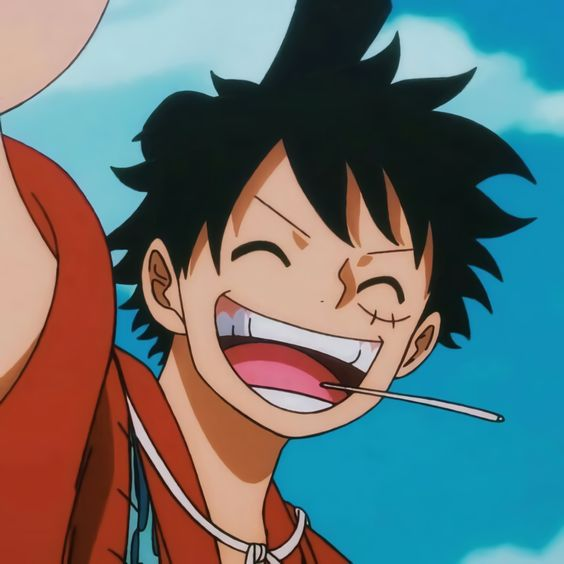
Monkey D. Luffy
Pirata
Descripcion
Es el protagonista principal de One Piece. Comió una fruta del diablo, que le convirtió en un hombre de goma.Fecha de Nacimiento
5 de MayoHabilidad
Gomu Gomu no Mi
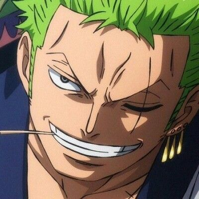
Roronoa Zoro
Pirata / Espadachín
Descripcion
Es un antiguo cazarrecompensas y actual espadachín y combatiente de los Piratas de Sombrero de Paja.Fecha de Nacimiento
11 de NoviembreHabilidad
Espadachín
Vismoke Sanji
Pirata / Cocinero
Descripcion
Es el cocinero de los Piratas de Sombrero de Paja, así como uno de los oficiales principales de la Gran Flota de Sombrero de Paja.Fecha de Nacimiento
2 de MarzoHabilidad
Diable Jambe
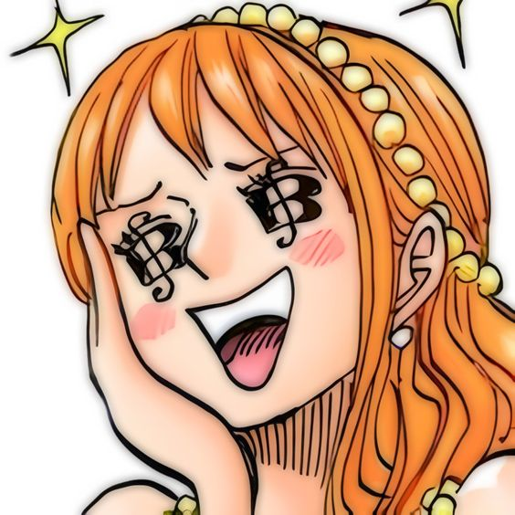
Nami
Pirata / Navegante
Descripcion
Es una pirata y la navegante de los Piratas del Sombrero de Paja, así como una de las protagonistas principales de la serie.Fecha de Nacimiento
3 de JulioHabilidad
Clima Tact
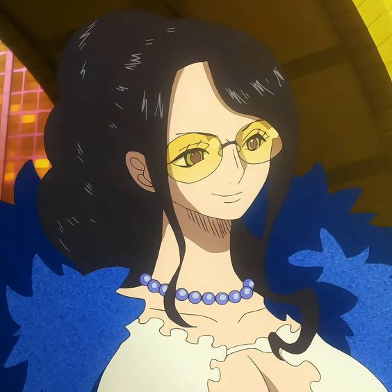
Nico Robin
Pirata / Arqueóloga
Descripcion
Es la arqueóloga de los Piratas de Sombrero de Paja, así como una de los oficiales principales de Flota de Sombrero de Paja.Fecha de Nacimiento
6 de FebreroHabilidad
Hana Hana no Mi
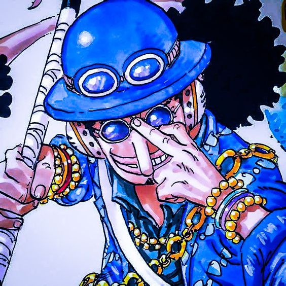
Usopp
Pirata
Descripcion
Es el francotirador de los Piratas de Sombrero de Paja y uno de los oficiales principales de la Gran Flota de Sombrero de Paja.Fecha de Nacimiento
1 de AbrilHabilidad
Francotirador
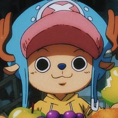
Tony Tony Chopper
Pirata / Medico
Descripcion
Es el médico de los Piratas de Sombrero de Paja, así como uno de los oficiales principales de la Gran Flota de Sombrero de Paja.Fecha de Nacimiento
24 de DiciembreHabilidad
Hito Hito no Mi
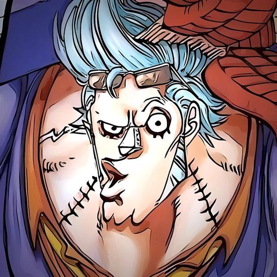
Franky
Pirata / Carpitenro
Descripcion
Es el carpintero naval de los Piratas de Sombrero de Paja y uno de los oficiales principales de la Flota de Sombrero de Paja.Fecha de Nacimiento
9 de MarzoHabilidad
Cyborg
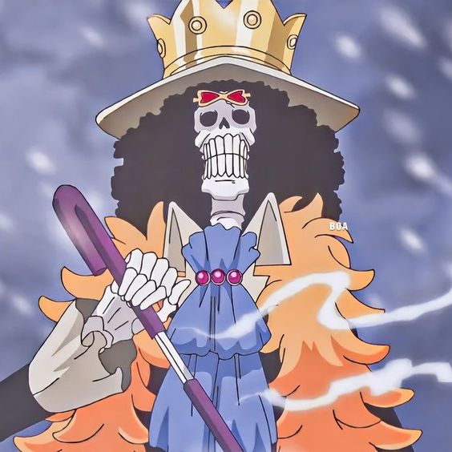
Brook
Pirata / Musico
Descripcion
Es el músico de los Piratas de Sombrero de Paja, uno de los oficiales principales de la Flota de Sombrero de Paja.Fecha de Nacimiento
3 de AbrilHabilidad
Yomi Yomi no Mi
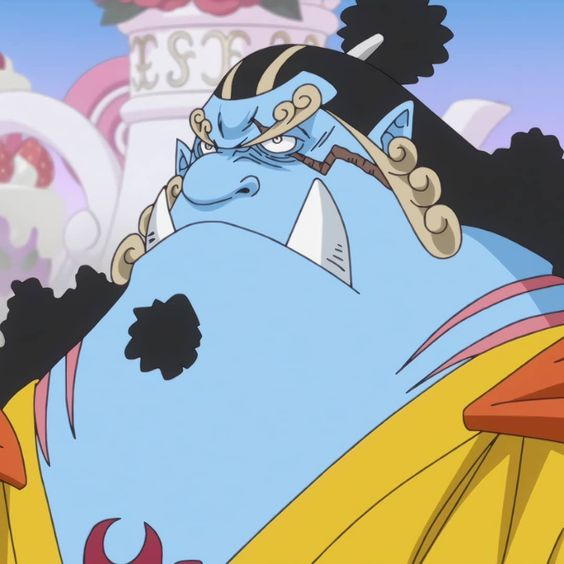
Jinbe
Pirata
Descripcion
Es el timonel de los Piratas de Sombrero de Paja y uno de los oficiales principales de la Gran Flota de Sombrero de Paja.Fecha de Nacimiento
2 de AbrilHabilidad
Destreza Gyojin
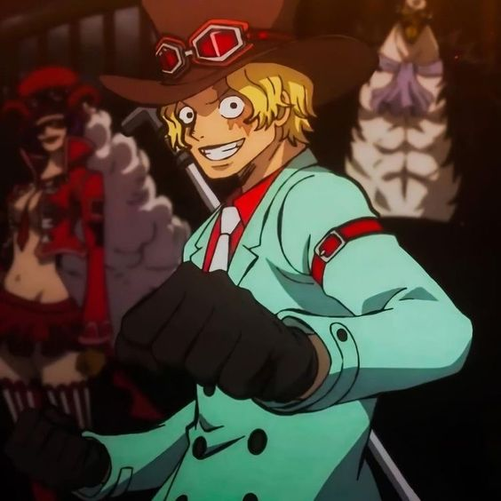
Sabo
Revolucionario
Descripcion
Es el jefe de personal del Ejército Revolucionario y, como tal, nº 2 de la organización.Fecha de Nacimiento
20 de MarzoHabilidad
Mera Mera no Mi
Dracule Mihawk
Pirata / Espadachín
Descripcion
Es un pirata y poseedor actual del título del Espadachín más Fuerte del Mundo, y entreno a zoro durante el time skip.Fecha de Nacimiento
9 de MarzoHabilidad
Espadachín
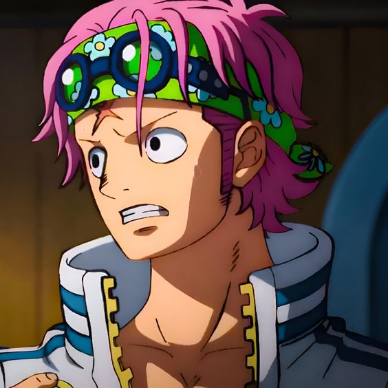
Koby
Marino
Descripcion
Es un capitán del cuartel general de la Marina y miembro de la unidad especial secreta SWORD.Fecha de Nacimiento
13 de MayoHabilidad
Haki de armadura
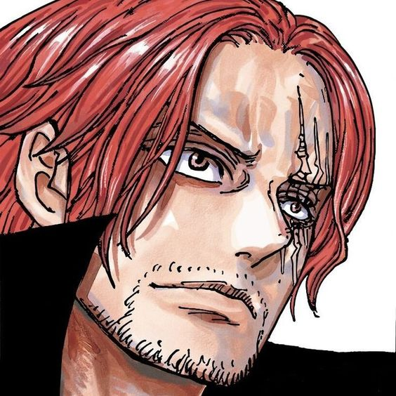
Shanks
Pirata
Descripcion
Es el capitán de los Piratas del Pelirrojo y uno de los Cuatro Emperadores que gobiernan el Nuevo Mundo.Fecha de Nacimiento
9 de MarzoHabilidad
Espadachín y todos los Hakis
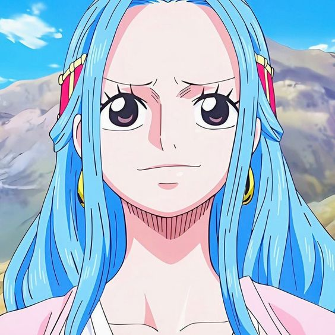